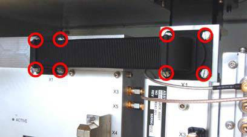

WG, SSPA
- Removal
Removal of the
WG, SSPA
.
Using the Radar Service application, stop antenna rotation (if active) and switch "Mains Off".
Turn off power to the transceiver using the power switch on the power supply unit.
Remove eight screws holding the waveguide assembly and remove it. Use the
Screwdriver, flexible, 6 mm
. See
Figure 1
Figure 1.
WG SSPA screws
